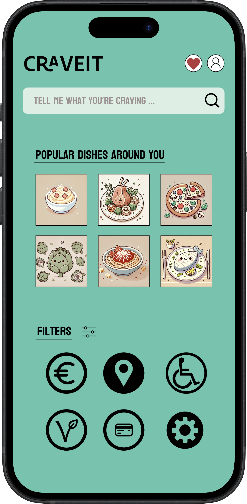
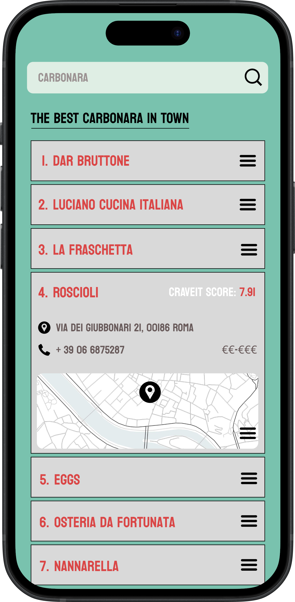
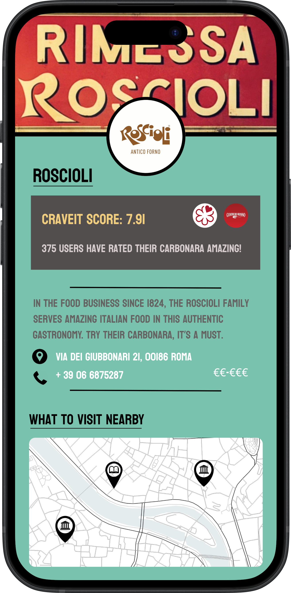

The App
The idea
The ‘CraveIT’ app has been designed to identify restaurants that are most loved for the traditional food they serve. In particular, users can find where to get the perfect carbonara in Rome! Users can log in, decide what they want to eat, and based on their selected dish, the best restaurants will be recommended!
How the app works
CraveIT allows you to select a dish from the traditional Roman cuisine and recommends the best restaurants based on your chosen dish. Additionally, you can set a series of filters for a more personalized response. The recommended results are based on the app’s AI-powered ranking system; its custom algorithm considers several factors, including customers’ feedback, experts’ opinions, the restaurants’ popularity, reliability and consistency over time.
Overview

CraveIT displays a simple overview page where you can search for the dish you want to try. Type the dish in the search bar and the app will suggest its full name. Can’t think of anything in particular? No worries, right below the search bar there are some buttons with icons identifying the most popular dishes in Rome. Click on what gets your attention! You can also set a series of filters such as:
- vegetarians and vegan options;
- payment by credit card;
- accessibility for users with reduced mobility;
- price range;
- average ratings of the restaurants;
- neighborhood;
- distance to the user’s geolocation;
- presence in food guides.
Ranking

Once you have chosen your desired dish and filters, you land on a new page that shows you the top ten restaurants selected by the ranking algorithm. The restaurants are sorted in descending order based on their CraveIT score, relative to your target dish, which ranges from a minimum of 0 to a maximum of 10.
Additionally, by clicking on the drop-down menu next to the restaurant’s name, the app show its CraveIT score, address, phone number, and price range; furthermore, a map at the bottom of the box will display its geolocation.
Ready to start your culinary journey? For more comprehensive information about the restaurant that grabbed your attention, simply click on the name and you will be redirected to the ‘Restaurant details’ section.
Restaurant details
 The page provides an overview of what the place has to offer. It includes a brief description of the restaurant, its geolocation, and further information such as the number of users who have rated your target dish as excellent. In addition, a map will display nearby places of interest – e.g., museums, places of worship, and libraries. This feature allows you to organize not only a lunch or dinner but also a small tour focused on the city’s gastronomic options. In Rome, of course, you’re just spoiled for choice.
You can also set some filters that will make your experience even more personalized, ensuring that the recommendations align perfectly with your preferences. This way, you can enjoy the best of Rome’s culinary scene, tailored to your specific needs and interests.